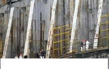

切尔诺贝利（乌克兰语：Чорнобиль；俄语：Чернобыль；中文意译：艾草），是乌克兰北部基辅州城市，位处白俄罗斯边境，邻近被废弃的城市普里皮亚季。1986年切尔诺贝利核事故发生于切尔诺贝利附近。
切尔诺贝利核电站位于乌克兰北部，距首都基辅以北130公里，它是前苏联时期在乌克兰境内修建的第一座核电站。切尔诺贝利曾经被认为是最安全、最可靠的核电站。1986年一声巨响彻底打破了这一神话。由于操作人员违反规章制度，核电站的第4号核反应堆在进行半烘烤实验中突然失火，引起爆炸，其辐射量相当于400颗美国投在日本的原子弹。爆炸使机组被完全损坏，8吨多强辐射物质泄露，尘埃随风飘散，致使俄罗斯、白罗斯和乌克兰许多地区遭到核辐射的污染。切尔诺贝利核事故被称作历史上最严重的核电事故。普里皮亚季城因此被废弃。
- 中文名
- 切尔诺贝利事件
- 外文名
- Чорнобильська катастрофа
- 时 间
- 1986年4月26日
- 发生地点
- 苏联乌克兰普里皮亚季
切尔诺贝利事故事件
编辑1986年4月26日当地时间1点24分，苏联的乌克兰共和国切尔诺贝利（Чорнобиль，Chernobyl）核能发电厂（原本以列宁的名字来命名）4号反应堆发生严重泄漏及爆炸事故，大约有1650平方千米的土地被辐射。后续的爆炸引发了大火并散发出大量高辐射物质到大气层中，涵盖了大面积区域。这次灾难所释放出的辐射线剂量是广岛原子弹的400倍以上。事故导致32人当场死亡，上万人由于放射性物质的长期影响而致命或患上重病，至今仍有被放射影响而导致畸形胎儿的出生。
[1]
切尔诺贝利(5张)
这是一起严重的核事故。外泄的辐射尘随着大气飘散到前苏联的西部地区、东欧地区、北欧的斯堪地那维亚半岛。乌克兰、白罗斯、俄罗斯受污最为严重，由于风向的关系，据估计约有60%的放射性物质落在白俄罗斯的土地。但根据2006年的TORCH（The Other Report On Chernobyl）报告指出，半数的辐射尘都落在上述的三个前苏联国家以外。此事故引起大众对于前苏联的核电厂安全性的关注，事故也间接导致了前苏联的瓦解。苏联瓦解后独立的国家包括俄罗斯、白罗斯及乌克兰等每年仍然在事故的善后以及居民的健康保健方面投入经费与人力。因事故而直接或间接死亡的人数难以估计，且事故后的长期影响到目前为止仍是个未知数。
对于国际原子能机构的结论，其他组织却有着大相径庭的调查结果。在结论和观点相反的调查中，以环境保护组织绿色和平组织的结果最令人震惊。该组织于2006年4月18日发表报告称，切尔诺贝利核事故导致27万人患癌，因此而死亡的人数达9.3万。
与此同时，英国两名研究人员的一项研究表明，切尔诺贝利核事故的长期影响可能导致另外6.6万人死于癌症。也就是说，除了国际原子能机构承认的死亡数外，还有6.6万人死于辐射所致的癌症，仅这个数字就是国际原子能机构所承认的死亡数的15倍还多。
切尔诺贝利具体设施
编辑

切尔诺贝利核电站
切尔诺贝利核电站（北纬51度23分14秒，东经30度6分41秒）位于乌克兰的普里皮亚季（Припъять，Pripyat），普里皮亚季市东南11英里（18千米），离乌克兰与白俄罗斯边界10英里（16千米），及乌克兰首都基辅（Киев，Kiev）以北70英里（110千米）。核电站由四个反应堆组成，每个能产生1千兆瓦特的电能（3200兆瓦特的热功率），核事故发生时四个反应堆共提供了乌克兰10%的电力。厂房的工程始于20世纪70年代，1号反应堆于1977年启用，接着2号（1978年）、3号（1981年）、4号（1983年）亦相继启用。还有两个反应堆（5号及6号？，每个能产生10亿瓦特)在事故时仍在建造中。厂房的四个反应堆都属于同一类型，称为RBMK-1000。
切尔诺贝利具体细节
编辑切尔诺贝利细节一
反应器有一个危险高正面空系数。简单地说，这意味着如果蒸汽气泡形成在反应器冷却剂中，核反应加速，如果没有其它干预，将会导致逃亡反应。更坏的话，在低功率输出，这个其它因素未补偿正面空系数，会使反应器不稳定和危险。反应器在低功率的危险对工作人员是与预计相反和未知数。
切尔诺贝利细节二
反应器的一个更加重大的缺陷是在控制棒的设计。在一个核反应堆，控制棒被插入反应堆以减慢核反应。但是，在RBMK反应堆设计，控制棒部分是空心的；当控制标尺被插入时，最初的数秒钟冷却剂被控制棒的空心外壳偏移了。因为冷却剂（水）是中子吸收体，反应堆的输出功率实际上上升。这情况也是与预计相反，而反应堆操作员亦不知情。
切尔诺贝利细节三
操作员粗心大意并违反了规程，部分是由于他们未察觉反应堆的设计缺陷。一些程序的不完善导致了事故发生。另一原因是安全干事和负责该夜实验操作员之间的通讯不足。
重要注意的一点，是操作员关上了许多反应堆的安全系统，除非安全系统发生故障，否则这是技术指南所禁止的。1986年8月出版的政府调查委员会报告，操作员从反应堆核心至少拿去了204支控制棒（这类型的反应堆共需要211支），留下七支。同样指南（上文提及）是禁止RBMK-1000操作时在核心区域使用少于26支控制棒。
切尔诺贝利重大伤害
编辑事故共造成31名消防人员死亡，数千人受到强核辐射，数万人撤离。保守估计前苏联共花费了180亿美元，以及50万军民处理此事件，但是现在看来事故对环境的负面影响无法估量！
切尔诺贝利白血病
1986年4月26日，位于乌克兰的切尔诺贝利核电站发生爆炸，大量高辐射物质抛出并被风吹散，位于乌克兰周边的国家全部都受到了严重影响。而保加利亚首都索菲亚距离切尔诺贝利只有1046公里，因此该国成为受污染最严重的国家之一。彼得罗夫出生在保加利亚北部的蒙塔纳地区，在切尔诺贝利事故发生时，他年仅6岁。“当时他家所处地区的核辐射指数，已经超过正常值的1000到1300倍。”已经担任保加利亚国家队队医长达20年之久的米哈伊尔·伊利耶夫医生在日前接受《太阳报》采访时表示，彼得罗夫很可能是受到了高强度辐射或是食用了被污染的食物，导致其患上急性白血病。
至于为何会判断彼得罗夫是受切尔诺贝利核爆炸的影响，伊利耶夫医生进一步解释道：“斯蒂利安的家族没有白血病病史，所以我认为他是那次核事故的又一个牺牲者。时任保加利亚政府应该对此负责。无论是切尔诺贝利发生爆炸，还是污染云飘散到保加利亚，政府都没有通知我们。”
切尔诺贝利相关数字
800年：专家称消除切尔诺贝利核泄漏事故后遗症需800年，而反应堆核心下方的辐射自然分化要几百万年；
9.3万人：20年前的切尔诺贝利核电站事故造成致癌死亡人数约为9.3万人左右；
27万人：27万人因切尔诺贝利核泄漏事故患上癌症，其中致死9.3万人；
34万人：核泄漏事故发生后，前苏联疏散了11万多人，随后数年，又从污染严重地区搬迁了23万人，前后共疏散34万余人；
50万：参与抢救切尔诺贝利的英雄们有五十万；
切尔诺贝利类似事件
编辑1. 1979年3月28日 美国 三英里岛核事故
切尔诺贝利灾后反思
编辑切尔诺贝利核事故无疑是人类灾难史上最黑暗的一幕。1986年4月26日那个悲惨的早晨，让无数人记住了核灾难这个名词。31年过去了，当年深受事故影响的乌克兰、白罗斯和俄罗斯三国人民依然生活在核事故的阴影中。
切尔诺贝利生产生活
1986年4月26日凌晨1时24分，切尔诺贝利核电站4号反应堆突然发生爆炸。一条30多米高的火柱掀开了反应堆的外壳，致使8吨多强辐射物质泄漏，320万人受到核辐射侵害，2294个居民点受到核污染，800万公顷土地成为放射性尘埃降落区。当年距核电站仅3公里的普里皮亚季，约5万居民全部被疏散，如今仍是一座无人居住的“死城”。核电站周围半径30公里的地区被辟为隔离区，严格限制人员进入。
事故发生后，为防止核电站内核原料和放射性物质再次泄漏，政府对发生爆炸的4号机组用钢筋混凝土掩体进行了封闭（俗称“石棺”），但是其他三个机组仍然继续工作并对外供电，直到苏联解体后独立的乌克兰还在继续使用该核电站，乌克兰政府于2000年12月15日彻底关闭了切尔诺贝利核电站。也就是说核事故发生后，切尔诺贝利核电站还工作了14年，核电站的六千多名工人还上了14年班，事故的后果到底如何，这其中的真相耐人寻味。事故发生20年后，生态学家们惊奇地发现“石棺”周围的“死亡区”竟成了动植物的“天堂”。这里生存着270多种鸟类，繁茂的植被为野猪、鹿等动物提供了栖身之所。
每年都有一些难舍故土的人自愿回到隔离区生活。隔离区内现有500—800名居民，绝大多数是退休者。老人们居住的房子通了电，有的还安了电话，他们在隔离区里种菜、饲养家禽、捕鱼打猎，过着自给自足的生活。
切尔诺贝利损失惨重
据乌紧急情况部公布的资料显示，共有264万乌克兰人遭受核辐射侵害，10万人失去家园。距离核电站7公里内的松树、云杉凋萎，1000公顷森林逐渐死亡。30公里以外的“安全区”也不安全，癌症患者、儿童甲状腺患者和畸形家畜急剧增加。
由于距离切尔诺贝利核电站只有几公里，带有放射性物质的粉尘大部分随风落入白罗斯境内。白俄罗斯23%的领土受到污染，大部分人受到不同程度的核辐射，6000平方公里土地无法使用，400多个居民点成为无人区。
俄罗斯也在切尔诺贝利核事故中损失惨重。俄卫生防疫总医师奥尼先科4月24日表示，俄大约有4300个城镇和村庄坐落在切尔诺贝利核事故后遭受放射性污染的区域，生活着超过150万居民。
切尔诺贝利核阴影
虽然已过去31年，但切尔诺贝利核事故带来的噩梦远没有结束。首先，切尔诺贝利核电站依然存在安全隐患，目前，“石棺”下还封存着约200吨核原料。近年来，“石棺”顶部发生倾斜，表面出现裂缝，甚至有崩塌的危险。更危险的是坚固的外壳挡不住地下水的渗透，反应堆内的核物质随着地下水继续污染周围地区，危及乌克兰的饮用水源，因此这座“石棺”被俄媒体称作“延时引爆的地雷”。
更可怕的是核事故给人们造成的心理阴影难以消除。“2006年4月的一天，一次猛烈的地震在恐怖的雷鸣声中席卷乌克兰的原野。切尔诺贝利的死区随后迅速扩张，一时间，整个世界似乎都陷入了一种莫名的危机之中……”这是乌克兰GSC Game World《潜行者》系列中《潜行者 普里皮亚季的召唤》中游戏开头主题介绍。在那场核泄漏悲剧过去20年时，游戏中的核危机提醒着人们不要忘记过去。
如今，任何与核有关的话题仍会触动乌克兰民众敏感的神经，需不需要发展核电，核电安全如何保障，核废料如何处理等在乌社会引起广泛争议。为摆脱在核电领域对俄罗斯的依赖，去年底，乌政府决定与美国公司合作修建核废料储藏库，结果引发很多民众的恐慌。一位当地学者就曾对记者说，他很担心兴建核储藏库会增加乌克兰的核污染威胁。
在白罗斯受灾严重的戈梅利州，父母纷纷把儿女送往明斯克上大学或中专，希望他们毕业后不要再回家乡。白罗斯人甚至已到了谈“核”色变的程度。邻国立陶宛去年提出要在与白罗斯接壤的地方建造一个核废料贮存场，结果引起白俄各界的强烈抗议。反对者认为“任何新的核事故都将使白罗斯走向毁灭”。在俄罗斯，谈到切尔诺贝利时许多人都还心有余悸。记者一位俄罗斯朋友感慨说：“核泄漏事故将深深刻在俄罗斯人记忆中，永远无法抹去。”
切尔诺贝利走出阴影
31年来，为早日走出切尔诺贝利的阴影，各受灾国都做出了巨大努力。乌克兰总统尤先科日前表示，乌20年内已投入150亿美元用于救灾工作。为防止反应堆内的核物质再次泄漏，乌计划在“石棺”外表加盖一座高100米、宽250米的掩体，工程将于2006年夏天开工。这座“新石棺”将保证切尔诺贝利核电站在未来100年内不再发生核泄漏。2012年3月27日，乌克兰前总统维克多・亚努科维奇（Viktor Yanukovych）宣布，乌克兰将在4月26日动工，为切尔诺贝利核电站发生事故的4号核反应堆建造新“石棺”，新石棺将耗资9.35亿欧元（约合78亿元人民币），大多数资金来自世界各国政府捐赠，乌克兰提供的资金仅占总数的6%。
[2]
2014年8月2至4日，拱门（也就是媒体报道的“石棺”）下半段在地面组装完毕后，被顺利提升至33米高，这是应对核泄漏事故长期处理规划新安全限制（NSC）的重要里程碑。拱门的第二部分包含大量钢架构，必须在整个部分完工之前送至地面。乌克兰为切尔诺贝利核电站建造的新石棺拟使用100年。
[3]
白罗斯政府建立了覆盖全国的核辐射监测网，在未受污染的地区为动迁居民新建了239个配有完善生活设施的村庄。受严重污染的1000多平方公里土地被划为核生态自然保护区，不许人居住，只能开展核生态研究。曾参加当年核事故抢险工作的近12万人享受特殊的医疗照顾。国家为因核辐射致残者提供免费医疗和生活补贴。
切尔诺贝利核反思
随着2006年4月26日———切尔诺贝利核事故20周年纪念日临近，一股“切尔诺贝利热”在俄、乌、白罗斯三国兴起。
2006年4月24日，为期3天的“切尔诺贝利核事故20周年展望未来”国际学术大会在基辅国家大剧院开幕。联合国、欧盟和国际原子能机构等国际组织和相关国家的代表出席了会议。开幕式上，乌总统尤先科表示乌克兰将坚定不移地履行自己承担的国际义务。大会开幕当天，乌一些环保组织在会场外举行示威活动。人们高举“记住切尔诺贝利”等标语，抗议政府决定在2030年前新建22个核电站机组以及在乌境内兴建核废料储藏库。4月26日，尤先科将亲赴切尔诺贝利核电站及其卫星城斯拉乌季奇参加纪念活动。当晚9时，乌克兰全国将举行烛光悼念活动。
近来，在白罗斯的电视、报刊上常会看到关于切尔诺贝利核事故给白造成严重后果的报道。4月19至21日，首都明斯克举行了“切尔诺贝利核事故20年———恢复和稳定发展受灾地区的战略”大型国际学术研讨会。4月19日，《切尔诺贝利的痛苦》摄影展在明斯克开展。21日，白首都电影院首映了纪录片《切尔诺贝利十字架》。人们在用“痛苦”、“黑色”这样的词汇形容事故带来的伤害。
莫斯科也举办了纪念切尔诺贝利核泄漏事故20周年的图片展览，吸引了众多游人前来参观。俄最大电视台之一“独立台”在24日晚黄金时间播出了纪念切尔诺贝利核事故的专题纪录片。俄发行量最大的报纸《共青团真理报》在25日刊出了《切尔诺贝利：地狱后的20年》的专题纪念文章。俄总统普京25日还颁布了对切尔诺贝利核事故中有功之臣的嘉奖令。
切尔诺贝利世界关注
切尔诺贝利核泄漏事故不仅使乌克兰、白罗斯和俄罗斯成为“重灾区”，带有放射性物质的粉尘随风还飘到了保加利亚、波兰、德国……欧洲大部分地区没能逃脱核污染的威胁。因此，切尔诺贝利核事故不仅是乌、白俄、俄三国的灾难，也是欧洲乃至全世界的灾难。
事故发生后，人类利用核能的安全性备受质疑，不少国家迫于舆论压力关闭了本国的核电站，世界核能的发展陷入了前所未有的低谷，人们围绕未来核能的发展方向发生了激烈的争论。25年后的今天，世界仍然处在核阴影的笼罩之中，朝鲜半岛核问题，伊朗核危机……在这种背景下，切尔诺贝利核事故25周年纪念日的到来自然牵动了全世界关注的目光。
2006年，国际原子能机构专门在其网站上开辟了一个切尔诺贝利20周年纪念专题，通过大量文字、图片和视频向人们讲述事故原委、发出警示。4月14—24日，美联社连续发表报道，通过历史回顾、现状介绍、记者亲历、问题与反思等多种形式对这一事件进行综合分析。法新社、路透社、《纽约时报》等世界各大媒体都进行了报道，各自以自己独特的影响力向世界传递人们对安全开发利用核能的关注。
“对于世界上成百上千万人来说，切尔诺贝利象征着灾难与毁灭、疑云与争议。”这句话也许能概括出切尔诺贝利核事故究竟给人类带来了什么。
切尔诺贝利事故纪念
编辑切尔诺贝利讲话内容
潘基文在讲话中说，切尔诺贝利核事故带来了严重的人道主义、环境、社会和经济后果，至今仍影响着有关地区乃至全球。30周年纪念日提供了一个机会，让人们汲取教训，反思恢复过程，并再次感谢事故发生后牺牲健康乃至生命的善后工作者。
1986年4月26日，位于乌克兰北部靠近白罗斯边境的苏联切尔诺贝利核电站4号机组突然发生爆炸，造成30人当场死亡，逾8吨强辐射物泄漏。这起核泄漏事故还使核电站周围6万多平方公里土地受到直接污染，320多万人受到核辐射侵害，成为迄今人类和平利用核能史上最严重的事故。
切尔诺贝利记录片
2016年4月26日切尔诺贝利事故三十周年的纪念日，为了纪念这个日子，一支乌克兰的纪录片摄制团队到达曾经的普利普亚特市及其周边，来拍摄废墟的影像。这部360电影旨在将你带入切尔诺贝利内那些只有雇员才能进入的隔离区中。
[5]
- 参考资料
-
- 1. 切尔诺贝利的今天：巨型穹顶覆盖反应堆残骸 ．科学探索[引用日期2012-12-25]
- 2. 乌克兰宣布4月为切尔诺贝利核电站建造新“石棺” ．新华网．2012年03月28日[引用日期2015-02-26]
- 3. 乌克兰为切尔诺贝利核电站建造新石棺 拟使用100年 ．中国日报中文网．2015-02-26[引用日期2015-02-26]
- 4. 联合国纪念切尔诺贝利核事故30周年 ．人民网[引用日期2016-11-04]
- 5. 切尔诺贝利360 ．优酷[引用日期2016-04-28]
词条标签：